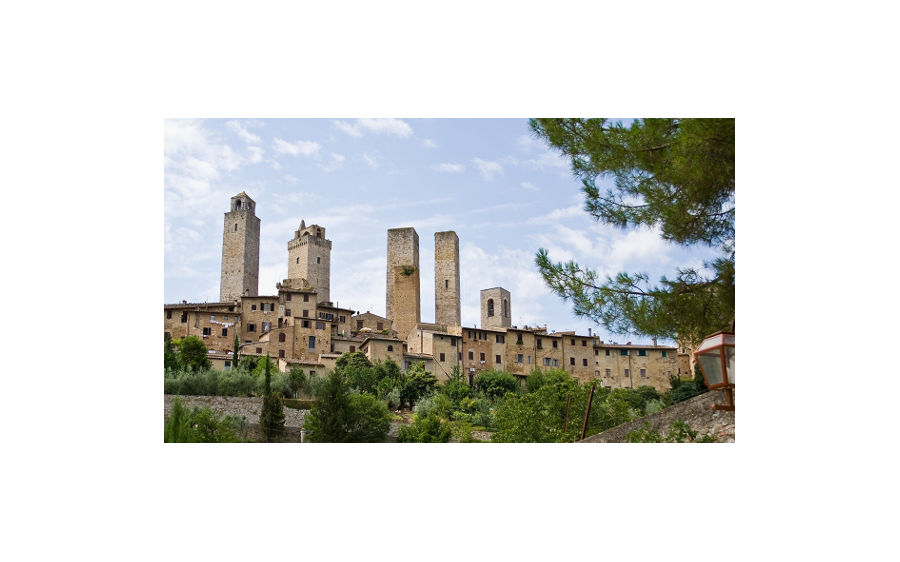

-
M
Des Ferrari retouchées avec Gimp
Les tours de San Grimignano en Toscane ; exercice de retouche sur Gimp

Ici la photo avec une grue que l'on enlève avec le tampon dans GIMP.

Ici la photo retouchée !
GIMP en est à la version 2.10 et nous pouvons la télécharger sur ce télécharger sur ce site. ou en cliquant sur l'image GIMP ci-dessous